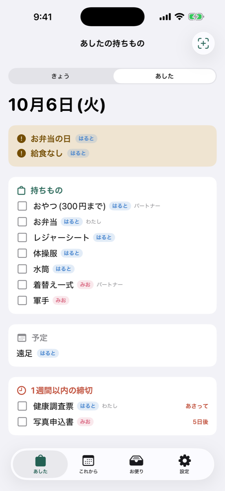
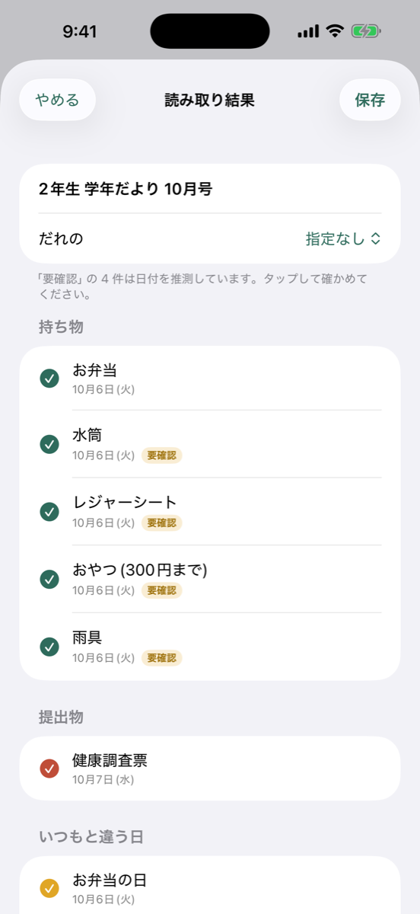
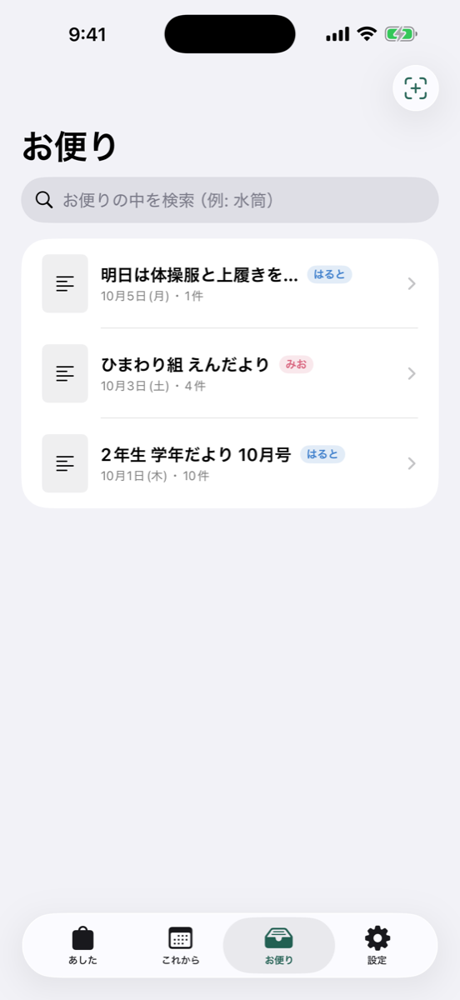

お便りを放り込むだけ。
あしたの持ちものを前の晩に。
学校や園のプリント、連絡アプリのPDFやスクショ、LINEで回ってきた文章。取り込むと、持ちもの・提出物の締切・いつもと違う日を取り出して、前の晩20時と当日の朝7時に知らせます。
iPhone用・近日公開


朝の玄関で「それ、きょうだった？」をなくす
お便りは紙で来たり、アプリのPDFで来たり、LINEで回ってきたり。カレンダーに予定は入れても、「水筒」「体操服」「健康調査票は火曜まで」といった細かいことは、つい朝になって気づきます。
あしたの持ちものは、予定を入れるためのアプリではありません。あしたの準備と、提出物の締切を忘れないためのアプリです。いつもと違う日は、目立つ帯で知らせます。
- お弁当の日
- 給食なし
- 早帰り
- お休み
- 私服
- プール
ほかのアプリとの違い
- 読み取りはiPhoneの中だけ
- お便りの写真や子どもの名前を、外のサーバーに送りません。アカウント登録もありません。
- 相手はアプリを入れなくていい
- iPhone標準の「リマインダー」の共有リストに書き出せます。夫婦の相手のiPhoneにも、持ちものと締切が届きます。項目ごとに「だれが準備するか」も決められます。
- 通知に中身が出る
- 「あしたの準備」の通知を開かなくても、持ちものの一覧がそのまま読めます。時刻は変えられます。
- 月額なし
- 買い切りです。サブスクリプションはありません。
料金
無料：お便りの取り込み 月10回まで・子ども1人まで。読み取り、通知、リマインダー書き出しは無料でも使えます。
Pro（買い切り）：取り込み無制限・子ども複数。ファミリー共有で夫婦どちらのiPhoneでも使えます。価格はApp Storeでご確認ください。
サポート
読み取りがまちがっていたら？
保存する前の確認画面で、名前・日付・種類を直したり、消したり、足したりできます。日付を推測した項目には「要確認」の札がつきます。保存したあとも、項目をタップすれば直せます。
夫婦で共有するには？
- アプリの「設定」→「リマインダーに書き出す」をオンにして、書き出すリストを選ぶ
- iPhoneの「リマインダー」アプリで、そのリストを長押し →「共有」→ 相手を選ぶ
- 相手が招待を受けると、相手のiPhoneにも項目が届きます
通知が来ない
iPhoneの「設定」→「通知」→「あしたの持ちもの」で通知を許可してください。アプリの「設定」で時刻を確認できます。持ちもの・締切・いつもと違う日がある日だけ通知します。
機種変更したら？
データはiPhoneの中に保存されています。iCloudバックアップやクイックスタートで新しいiPhoneに移すと、引き継がれます。
Proを買ったのに無料版のまま
「設定」→「Pro」→「購入を復元」をタップしてください。
お問い合わせ
uneisann@gmail.com（件名に「あしたの持ちもの」と入れてください）